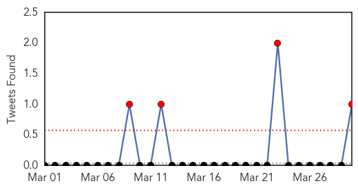
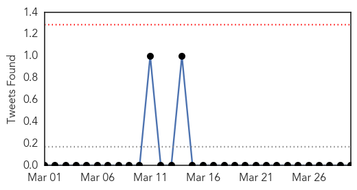

Measles
30-Day Web Trend
0 alerts, 0 warnings

30-Day Twitter Trend
1 alerts, 0 warnings

Article Locations

Article Confidences

Top Articles:
- 0.911
- Vail Daily health feature: Measles outbreak raises concern, awareness
- 0.841
- Dana Hills High School
- 0.796
- Cambodia 'measles free', WHO reports
- 0.784
- Oklahoma City-County Health Department offers MMR vaccines
- 0.761
- Cambodia ‘measles free’, WHO reports, National, Phnom Penh Post
- 0.703
- Theme Week: Infectious Disease, Contagion and the History of Vaccines
- 0.649
- The Disneyland Measles Outbreak is (Still) Over
Top Tweets:
- 0.724
- Broad measles vaccination coverage & rapid public health response are critical for preventing and controlling measles cases and outbreaks.
Influenza
30-Day Web Trend
1 alerts, 0 warnings

30-Day Twitter Trend
3 alerts, 0 warnings

Article Locations

Article Confidences
Top Articles:
- 0.994
- Three more die of H1N1 in Maharashtra
- 0.944
- Rare genetic mutation explains why flu can kill in rare cases
- 0.940
- Five things to know about the bird flu
- 0.937
- Egypt has 10 new H5N1 cases, Indonesia 2
- 0.931
- Prevention still best flu fighter
- 0.885
- Today's stories from newspapers in North Bay Nipissing
- 0.877
- Today's stories from newspapers in Orangeville
- 0.837
- ‘Polio-like’ strain of enterovirus D68 may be responsible for mystery paralysis, study says
- 0.787
- Minnesota poultry farm tested positive for bird flu
- 0.751
- March 30, 2015 Archives
- 0.751
- March 30, 2015 Archives
- 0.751
- March 29, 2015 Archives
- 0.751
- March 29, 2015 Archives
- 0.751
- March 29, 2015 Archives
- 0.616
- Prison overcrowding blamed for high TB infection rate
Top Tweets:
-
No tweets found for Mar 30, 2015